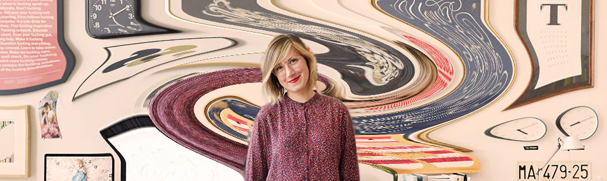
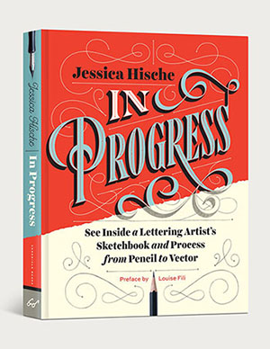
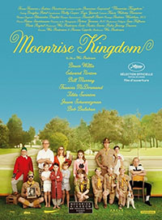
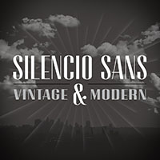
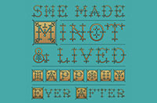
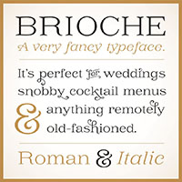
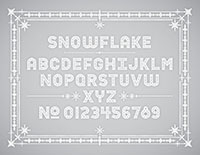
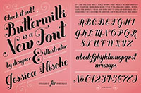
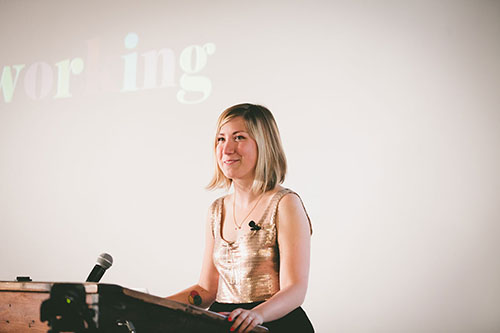

Jessica Hische
What Jessica Has Brought to the World of Design
In this essay, I would like to look at how Jessica Hische has been influenced in the work she has made and also to look at the side projects that include the book covers she has designed including her book 'In Progress'. I would also like to find out some general things on Hische like where she is from and where she grew up to see how Jessica Hische growing up shaped the work she has made today.
Hische's Background
Jessica Hische is a lettering artist, type designer, illustrator and also an author. She is from Charleston, South Carolina and was born in the year of 1984 on the 4th April. Hische would be best known for the personal projects that she has carried out such as “Daily Drop Cap” (which had a huge impact on her career, she created 12 alphabets and illustrated a letter per day and posted them online so others can view it) and “Should I Work for Free” (is a flowchart to help figure out when working for free is justifiable and when clients should be paying for your service and if the come back to you for more work , the same discount may not apply. This way they will treat you as if they have hired an expensive designer) Jessica Hische grew up in Pennsylvania and was brought up by parents that were non-creatives but were happy with Hische to continue in to a career that seemed pretty impractical to people in the working world. Jessica Hische confirmed herself as a Graphic Design major when she found herself diverting her attention towards painting projects to work on posters and identities. Most of her client work is now lettering so ‘designistrator‘ is the title she has given herself.Her very first book is available on ‘Chronicle Books’ which is named ‘In Progress’, this book is designed to teach you how to sketch distinctive letter forms and to turn those sketches into finalised vector artwork through a step-by-step instruction.
Hische's Career
Hische studied and graduated from the Tyler School of Art with her degree in Graphic and Interactive Design. She then went on and graduated in 2006 and got a job as a freelance designer in a small studio in Philadelphia while there she helped in the designing of books as senior Designer at Louise Fili’s studio (Louise Fili Ltd) Hische actually said that she ended up working for Louise almost by accident as she was big admirer of Louise’s work and so she sent her a gift in the post and did not expect to receive a call for a portfolio review on the same day Louise then offered Jessica Hische a job on the spot. She did not expect anything in return, her intention was just show her some of her own original work and what she was creating. Hische had worked for Fili’s for two and a half years but this also made her regain her interest in illustration and image making, so in 2009 Jessica Hische left Louise Fili Ltd. Hische now loves to work for herself and having the flexibility to manoeuvre her career to fit her life and choosing not to scale is a choice she made for herself her own work and happiness. Jessica then went into freelancing as she enjoyed it and it is all about forming short partnerships with art directors and clients which also makes them feel that you’re are as excited about the project this will create good bonds with all partners.

Hische’s career changed when she had had took to carry out a project earning her the title ‘Drop Cap Girl’. Jessica Hische is known to create designs for clients such as Tiffany & Co., Starbucks, The New York Times, The United States Postal Service “Love” stamp (250 million stamps ended up being sold), Target, Wired Magazine, Penguin. The Penguin drop caps was a series of twenty-six collectable hardcover editions in 2013 which was so successful it won awards in 2014 at the Communication Arts 4th Typography Competition.
Projects
In 2014, Jessica Hische created the script typeface Tilda at Font Bureau for Moonrise Kingdom this film was directed by the famous American film director Wes Anderson, she did not expect the attention to detail that she would have to apply to this project. She received emails at 2am from Anderson asking to make the R slightly smaller or to make something else a little bit rounder. She is also had designed book covers for Dave Eggers’ novels such examples include “A Hologram King” and “The Circle”. Jessica Hische has also worked collaboratively in the Studiomates and The Pencil Factory shared studios.
Jesscia Hische's Work
Hische has created a sum of commercial and proprietary type faces as this is the area that she predominantly works in with lettering. Here are a few of examples:
- Tilda – 2014 Hische originally designed this for the Wes Anderson film Moonrise Kingdom in 2012
- Silenco Sans – 2014
- Minot-2013
- Brioche
- Snowflake - 2010
- Buttermilk - 2009
     
Joining Forces
Jessica Hische has joint forces with her Husband who is a web designer known as Russ Maschmeyer, as a side project they have created a tutorial website called “Don’t Fear the Internet” which teaches HTML and CSS to web designers who are in the beginning stages of learning. Hische does not consider or see herself as a web designer, although a lot of the side projects that she has carried out are web-centric. Jessica Hische actually became well known for the side projects that she created as well as the projects she completes for many of her clients. Jessica Hische was named the ‘Print Magazine New Visual Artist in the category 20 under 30’ she has also been recognised for the ‘ACD Young Gun’ award. In past years, she has been named in the Forbes 30 under 30 category in art and design and a person to watch by GD USA magazine.
“Unlike most focused type and lettering books, Jessica’s covers a very broad range of topics in very approachable terms. From formal models of letter construction and serif structure all the way through software suggestions, vector drafting, and decorative shading. It functions as a perfect gateway drug to the world of lettering and type, building a solid foundation by addressing the biggest real-world issues. Plus, it's just damn nice to look at.”—Nick Sherman
Style of Working
Her style of working is to think about the bigger picture instead of all the individual areas, she believes the more people are involved and are able to bring specific skills will ultimately make the project bigger and better than what she could have done on her own. Jessica has said that the people that have the most successful careers are those that remain humble or at least empathetic no matter their career status. If you enjoy interacting with people, working with them is a key part to success in your career. She stated you need to be driven, organised and pleasant to have success as an independent design or creative type.
The computer was her medium, but every piece of work was sketched out first, at the time Hische never even realised that she was creating illustrative lettering, due to Marian Bantjes she found that lettering was making a resurgence. She also made her point clear that not only can you read a newspaper from the shop but also on some devices such as a smartphones, iPad, tablets and kindles so the type needs to be made clean and clear but it has to still convey the tone and feeling she wishes to evoke, readability is also extremely important to her. Jessica is a frequent contributor to the ‘oft Friends Type blog’ on this blog you will be able to find her wedding invitation which one of the nicest wedding invitations in my opinion and I have found to be very popular online.
Jessica loves nearly every aspect to her career as she gets paid to read and respond to emails from aspiring designers, illustrators and letterers to help them in any way that she possibly can. Hische is a professional public speaker that attends universities, colleges and travels to talk at conferences worldwide and she gets to meet the people that she herself admires. She says her main influences are Chris Ware, Matthew Carter, Alex Trochut, Marian Bantjes and Donald Young. She has said that she really loves the work of Wellington Kris Sowersby as he creates mostly text type, she said she loves nearly everything even from underwear logos he has created, she also enjoys the work of Mark Simpson, H&FJ and Alejandro Paul and that she likes different people that add their own unique touch.
Jessica Hische now carries out her work out of Title Case which is only by appointment and it is a collaborative studio in San Francisco, California. The studio is operated by Erik Marinovich a fellow letterer and designer alongside Hische herself. Jessica Hische has also worked collaboratively in the Studiomates and The Pencil Factory shared studios.
"Our attention spans are so limited because of all the media we consume every day, that a lot of people question why it's important to focus on such a fine level of detail in your work. I'm positive that there are a lot of accomplished graphic designers in the world and self-proclaimed "type nerds" that have barely scratched the surface of what there is to know about type. I know that every year I step back and think "God, I know nothing about type!" There's been a real resurgence in old printing methods though, and a massive new interest in type, and hopefully some of the people interested actually take the time to stare at a letter for an hour and see what you can learn from it, how deliberately every curve was drawn, and how making the tiniest adjustments can completely change a typeface."
Conclusion
In Conclusion Hische's work is quite revolutionary from working with Wes Anderson, Tiffany & Co., Starbucks and Penguin alongside the side projects she has created that have made herself well known. Jessica has inspired a lot of graphic designers, letterers, type designers, authors and illustrators. From being named a Print Magazine New Visual Artist in the category 20 and under 30 and also named an ACD Young Gun and being named in other global awards it would be hard to say that Hische has not influenced the world of design.